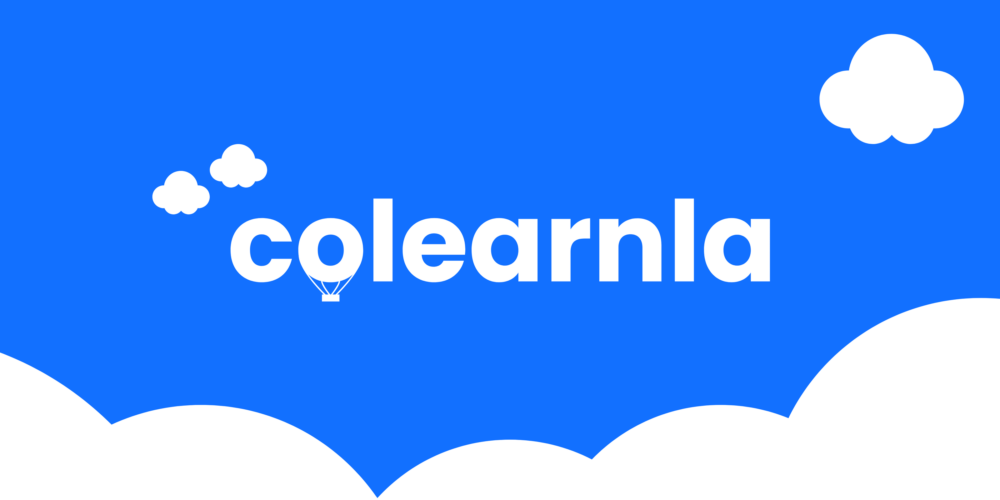
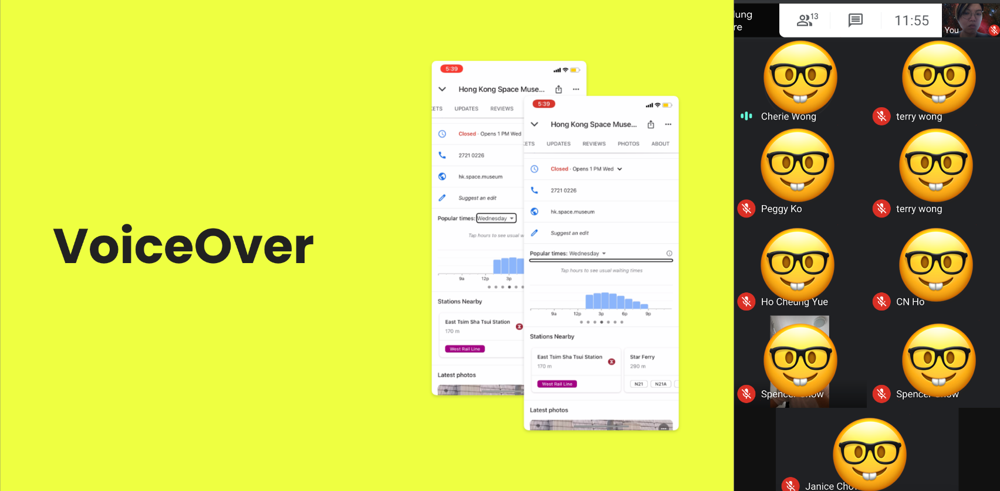

Colearnla:
UXers learning together.
Colearnla was a casual peer-to-peer learning group where UX practitioners could discuss design topics and learn from each other.
Colearnla overview
What if I created a co-learning group for UXers to collaborate and learn together?
As a UX designer working as a “team of one”, I missed regular conversations with other designers about the challenges we face.
Most local co-learning groups focused on programming, so I started one for UX.
Background
Learning together through shared experience.

View full sizeWhen I met new topics or problems that weren’t covered in training or at work, I wanted a space where designers could learn together through discussion and experience sharing.
After a few weekends of brainstorming and planning, the first virtual Colearnla meetup was ready. I invited several local UX designers to join the first session.
Early challenges
The first meetup didn’t go as planned.
The topic was interesting and not widely discussed locally, but attendance was lower than expected. At the end of the session, we held a feedback discussion.
One participant suggested focusing on peer-to-peer practical experience sharing, where designers talk about real challenges from their work.
I reorganised the next session around this. The format worked much better, and participants enjoyed deeper discussions with other local UXers.
Topics
A year of topics.
- Personas: practical experience sharing
- App and web accessibility with the Hong Kong Blind Union
- Whiteboard challenge practice group
- The Mysterious Design Challenge 2021
- UXer and developer skill exchange forum
- Self-awarding Ceremony 2021
- Lean Coffee retrospective
- UX debate
- Hong Kong UX designer survival guide
- Career check-up workshop

View full sizeReflection
What I enjoyed.
Collaboration
Working with other UX designers in the local community.
Peer learning
Learning from peers’ practical experiences and real work challenges.
A better format
More structured than casual platforms like Clubhouse, while still open to everyone.
A space to learn from each other.
Colearnla grew from one designer’s need into a community format that people kept coming back to.
- 01Create a space where UX designers learn from each other’s experiences
- 02Connect more designers within the local UX community